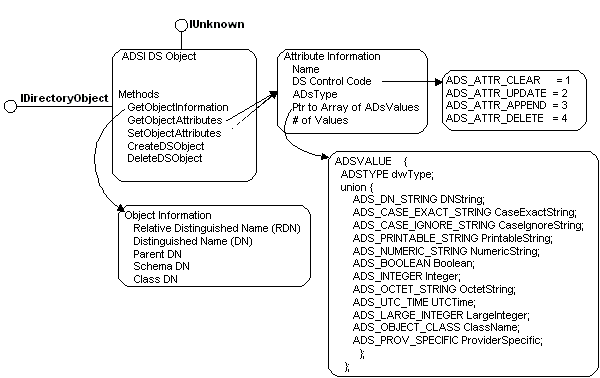

title: Using the IDirectoryObject Interface description: When you create an ADSI client in C or C++ that uses early binding, you will have a wider variety of ADSI data types available to use for your client if it calls the IDirectoryObject interface instead of the IADs interface. ms.assetid: d2c706ed-a341-4c49-91da-70230192f055 ms.tgt_platform: multiple keywords:
When you create an ADSI client in C or C++ that uses early binding, you will have a wider variety of ADSI data types available to use for your client if it calls the IDirectoryObject interface instead of the IADs interface. The IDirectoryObject interface provides methods to support a subset of an object's maintenance properties and to access its attributes. The following figure shows the relationships among the data structures.

In the preceding figure, the structure ADS_OBJECT_INFO defines properties that identify the object by distinguished name, relative distinguished name, by container (ParentDN), by object type (ClassDN), and by schema definition (SchemaDN). The attribute descriptor ADS_ATTR_INFO consists of a name, data type, an array of data values shown in ADSVALUE, and a flag that directs the underlying directory service to perform certain operations on the attributes detailed in ADS_ATTR_* constants. The data types for these attributes include the ADSI extended syntax types, detailed in ADSTYPEENUM.
Â
Â